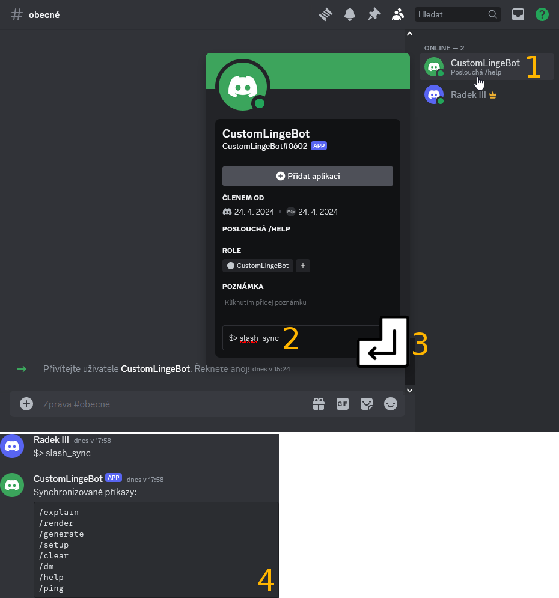
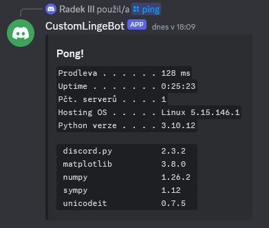

Synchronizace příkazů
Pokud se pokusíte odeslat nějaký z příkazů vašeho LingeBota, zjistíte, že žádný z nich není součástí našeptávání a z toho důvodu nelze žádný příkaz použít. Podpůrné příkazy totiž musí být synchronizovány s platformou Discord. K tomu slouží prefixový příkaz $> slash_sync, který je nutné botovi odeslat v DMs.
1. Klikněte na profil bota v seznamu členů serveru.
2. Do textového pole Poslat zprávu @jméno_vašeho_bota napiště prefixový příkaz $> slash_sync.
3. Potvrďte stisknutím klávesy enter.
4. Budete přesměrování do DMs, kde bot potvrdí požadavek na synchronizaci.

Upozornění: Doba trvání synchronizace
Synchronizace trvá několik minut. V DMs obvykle příkazy začnou fungovat mnohem rychleji.
5. Po chvilce by měly v DMs začít fungovat příkazy, to můžete otestovat např. příkazem /ping.
